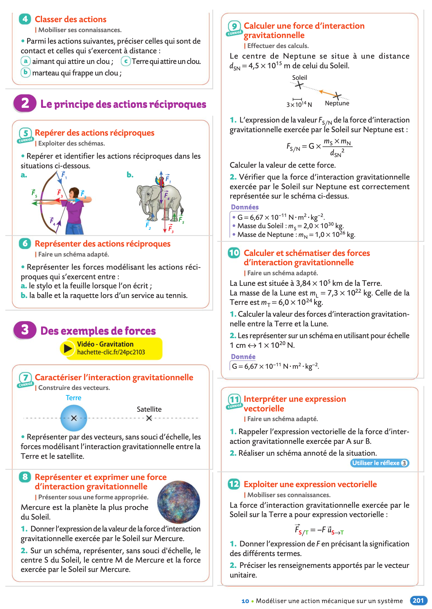
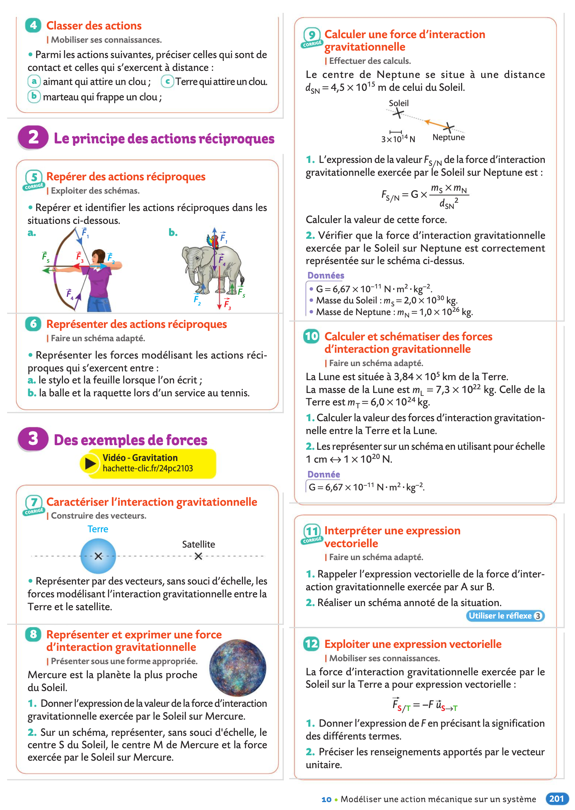

Cours et TP⚓︎
Consignes
- Cours: Veillez à toujours avoir imprimé le chapitre suivant à l'avance ainsi lorsque l'on passera à un nouveau chapitre vous l'aurez à votre disposition.
- Travaux Pratiques: Terminez systématiquement de rédiger l'activité qui a eu lieu et préparez la suivante pour la prochaine séance de TP.
- Exercices: Préparer et savoir refaire les exercices est primordial. Si Correlyce ne fonctionne pas, vous trouverez ici des captures d'écran des énoncés d'exercices.
Chapitre 1⚓︎
Corps purs et mélanges
Exercices du livre (chap 1 pages 28 Ã 36)


Chapitre 2⚓︎
Solutions aqueuses
- 📚Chapitre II
- ⚛️Activité 2 Préparation d'une solution par dissolution
- ⚛️Activité 3 Préparation d'une solution par dilution
- ⚛️Activité 4 Concentration en masse et masse volumique
Exercices du livre (chap2 pages 52 Ã 60)


Chapitre 3⚓︎
Description des mouvements
- 📚Chapitre III
- ⚛️Activité 5 Vitesse d'un système
- ⚛️Activité 6 Vecteurs déplacement et vitesse
Exercices du livre (chap9 pages 178 Ã 186)


Chapitre 4⚓︎
Modéliser une action mécanique
Exercices du livre (chap10 pages 200 Ã 206)
 



Chapitre 5⚓︎
Principe d'inertie
Exercices du livre (chap11 pages 216 Ã 222)


Chapitre 6⚓︎
De l'atome à l’élément chimique
Exercices du livre (chap3 pages 71 Ã 76)


Chapitre 7⚓︎
Vers des entités plus stables
- 📚Chapitre VII
- ⚛️Activité 10 Familles chimiques
- ⚛️Activité 11 Formation des ions
- ⚛️Activité 12 Modèle de Lewis
Exercices du livre (chap4 pages 90 Ã 98)


Chapitre 8⚓︎
Émission et perception d'un son
Exercices du livre (chap12 pages 237 Ã 246)


Chapitre 9⚓︎
Transformations physiques
Exercices du livre (chap6 pages 120 Ã 126)


Chapitre 10⚓︎
Transformations chimiques
- 📚Chapitre X
- ⚛️Activité 16 Trouver le réactif limitant
- ⚛️Activité 17 Du gaspillage dans les vignes
- ⚛️Activité 18 Transformations chimiques et effet thermique
- ⚛️Activité 19 Arôme de banane
Exercices du livre (chap7 pages 140 Ã 148)


Chapitre 11⚓︎
Réfraction et réflexion de la lumière
Exercices du livre (chap14 pages 279 Ã 286)


Chapitre 12⚓︎
Les lentilles convergentes
Exercices du livre (chap 15 pages 298 Ã 304)


Chapitre 13⚓︎
Les spectres d'émission
Exercices du livre (chap 13 pages 258 Ã 266)


Chapitre 14⚓︎
Les lois de l'électricité
Exercices du livre (chap 16 pages 316 Ã 324)